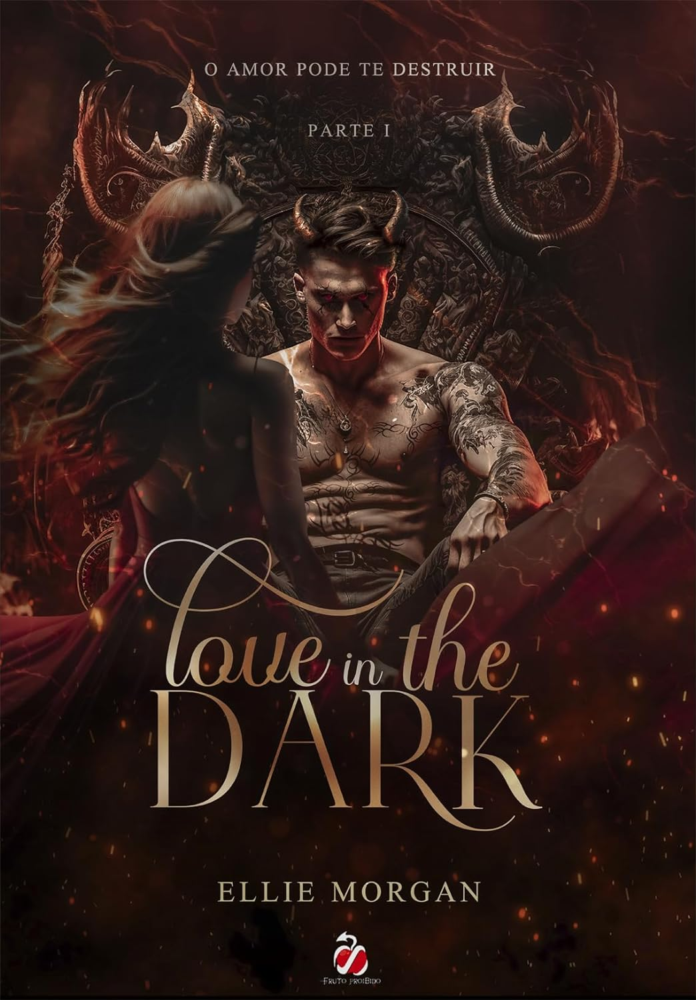

Escolheste mais respostas c)!
"Love in The Dark" de Ellie Morgan é uma história de romance entre Dytto, uma rapariga extremamente católica, e Christopher. Dytto, muito devota à sua fé, encontra-se num mundo de escuridão e mistério, no qual apaixona por Christopher, um homem marcado por segredos obscuros. Conforme o romance floresce entre ambos, segredos são lentamente revelados, desafiando as crenças e os limites de Dytto. Com uma narrativa emocionante e cheia de reviravoltas, este livro explora temas de fé, amor e redenção, enquanto Dytto e Christopher lutam para encontrar a luz no meio da escuridão.
 Compra em Português BR